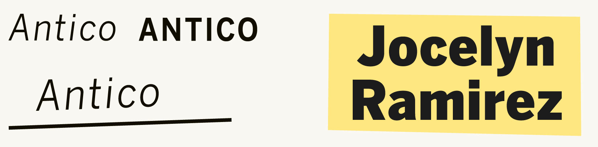
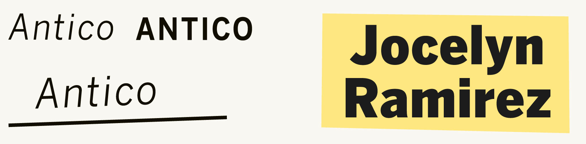

Branding
Colors
Primary
Secondary

Logo
Spot illustrations
Type
Headline
Subhead
The Los Angeles Times releases a 101 Best Restarurants list every year. The tone of 2020’s list was changed by the coronavirus pandemic.
The restaruant industry had suffered massively during shutdowns caused by the pandemic. Especially in California where the spread of the virus become the nation’s largest.
The list now includes not just restaurants but also people and organizations who helped provide food for the homeless, created avenues for social change, etc. Instead of a ranking, we now showed a celebration of resiliance.
Above, a server at La Boheme in West Hollywood in July. (Jason Armond / Los Angeles Times)
We had two food reporters working on this project along with a team of photo, video, design, and graphics journalists. We conducted interviews with a variety of small businesses around Los Angeles with the intention of finding how 2020, a year devastated by the pandemic, has affected the restaurant industry
Create a webpage of 101 list items that highlighted not just the best restaurants of 2020 but also the people and organizations that helped the industry survive the Covid-19 pandemic.
The page needed good navigation and filtering systems to effectively scroll across all items without exhausting users.
The list had to perform well on all platforms, since over 40% of the Times' audience at the time used mobile devices to access the site.
The Times' food section is a brand on it's own that is playful. This page needed to capitalize on that while also being respectful.
Poeple, places, and organizations who were all on the list and each type of item needed to be distinguishable.
Despite the tone being more fun, this is still a project hosted on the Los Angeles Times' page and it needed to use their own fonts, colors, etc.
The project was a collaboration with Citibank. I needed to convey that while also assuring the users that Citibank had no power over what made the list.
I mocked up 3 different styles to present to stakeholders. The list had to be PLAYFUL and FUN but also RESPECTFUL and SINCERE.
X food truck theme did not connect with test audience. Unnecessarily metaphorical.
X Black background was hard for users to read on and colors wouldn’t translate well to print.
X Black background was hard for users to read on and colors wouldn’t translate well to print.
✓ Style was reminiscent of previous 101 lists while muted colors lent a respectful tone to the page.
Ultimately, we choose to proceed with this minimalistic design.
I had to make sure the whole list was easily read on mobile because most readers will be seeing the project there. The page was made up of 3 different types of list items which I termed 'modules'. The most important module was the one showcasing restaurants which were the bread and butter of every Los Angeles Times 101 list. Other modules to consider were those showcasing the people on the list and those showcasing the organizations.
Original restaurant module
Revised
Heading contains more at-a-glance-information
Takeout information was important but possibly inaccurate. Moved down.
Users needed an address as well as a map
After sketching the structure of each module, I made hi-fi mockups of what the modules may look like. This was included the the Los Angeles Times' style guide for this project.
The page needed good navigation and filtering systems to effectively scroll across all items without exhausting users.The system also needed to be optimized for mobile where most users would check the website when on the go and looking for something to eat. There was 4 main methods of filtering and 3 for sorting that I wanted users to be able to accomplish.
Filtering: Type, Location, Cuisine, Price
Sorting: Price(low to high), Distance(near to far), Name(alphabetical)
We decided to keep the tone of the navigation conversational. This helped users not feel like the navigation menu was a roadblock since it became part of the experience.
The filtering and sorting was only applicable to one type of module, restuarants.
An animation hid the navigation when another type was selected.
On mobile, once the user scrolled past the navigation menu, they also had a top nav that they could use instead of having to scroll back to the very top.
On mobile, once the user scrolled past the navigation menu, they also had a top nav that they could use instead of having to scroll back to the very top.
On desktop, The nav was sequestered to the top-right corner.
I handled the development of a custom webpage on the Los Angeles Times site through our internal framework system using a previous template created by Ryan Murphy. I placed everything from the list into a massive spreadsheet, used a jupyter notebook to refine the list, and used python to reformat addresses, condense locations, etc. Through this system, I was able to automatically generate each entry in our list by iterating through this spreadsheet. Each section also featured a map which was automatically generated using the MapBox API.
Javascript, Node.js, Django, Python, Mapbox API
Google Sheets, Jupyter notebook, Mapbox
Programming, Data Analysis
Primary
Secondary
Headline
Subhead
The story published in December 7, 2020.
The page published to great success. It lead our coverage for a few days and also impressed returning fans. The list is still utilized and has also won recognition in the Society of News Design's 2020 awards.
2020 Award of Excellence at Society of News Design(SND) awards